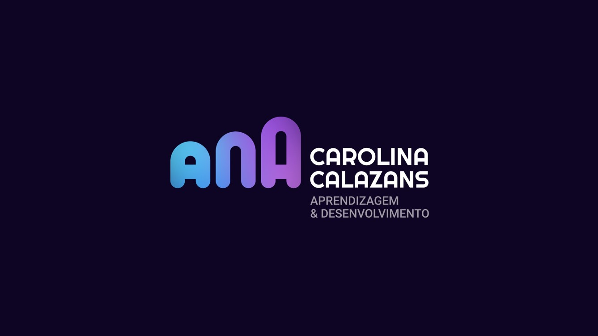

O que é esta página?
Esta página foi criada para te apoiar durante a formação da Ana Carolina Calazans. Relaxe e curta a viagem porque tudo o que for dito e mostrado já foi colocado por aqui para você poder consultar e ampliar depois.

PDF da Apresentação
PDF utilizado como apoio durante a formação.
Normalmente, uma apresentação traz três grandes veículos deexperiência:
- Voz | O que a palestrante fala
- Ilustração | O que a palestrante mostra
- Texto | O que a palestrante escreve na tela
Esta apresentação é apenas um apoio e não contém a totalidade do que foi dito. Para isso, recorra à gravação que será disponibilizada na pasta de apoio logo abaixo nessa página.
Abrir PDFPasta com os arquivos de apoio
A seguir estão os PDFs de artigos, a apresentação usada no encontro e outros materiais para você guardar e retomar no futuro.
Notas sobre a Experiência e o Saber da Experiência
Jorge Larrosa

"A experiência é o que nos passa, o que nos acontece, o que nos toca. A cada dia se passam muitas coisas, porém, ao mesmo tempo, quase nada nos acontece."
Larrosa explica que a experiência verdadeira só se dá quando nos EXPOMOS. Segundo ele, nosso dia a dia, as cidades e os espaços estão organizados para que nada aconteça. Plano e saúde, seguro, reservas antecipadas, plano de viagem, despertadores, caminhos pré definidos... Tudo isso faz com que seu dia tenda a ser EXATAMENTE como planejou, e que portanto NADA te aconteça.
Para Larrosa, o Saber da Experiência não se adquire lendo um livro. É necessário que algo LHE ACONTEÇA.
É necessário separar a experiência da informação. O saber da experiência é bem diferente do que obtemos quando sabemos das coisas. Estar informado é saber das coisas.
"Depois de assistir a uma aula ou uma conferência, depois de ter lido um livro ou uma informação podemos dizer que sabemos coisas que antes não sabíamos - que temos mais informação sobre alguma coisa. Mas ao mesmo tempo podemos dizer também que nada nos aconteceu, que nada nos tocou. Que com tudo o que aprendemos, nada nos sucedeu ou nos aconteceu"
Larrosa também considera importante separar Experiência de Experimento. O saber da experiência não deve vir de uma situação controlada a que um sujeito se expõe, mas do aprendizado vindo da experiência fortuita e genuína.
Abrir ArtigoUTOPIA
Fernando Birri

"A utopia está lá no horizonte. Me aproximo dois passos, ela se afasta dois passos. Caminho dez passos e o horizonte corre dez passos. Por mais que eu caminhe, jamais alcançarei. Para que serve a utopia? Serve para isso: para que eu não deixe de caminhar"
SONHO
Aline Sena

"O convite do sonho não é que você o realize. O convite do sonho é que você cresça e ganhe a altura dele"
Aline Sena tem um Podcast sobre auto conhecimento e cura. Ela faz resenhas de livros que trazem esse tipo de conhecimento, propões reflexões e conduz meditações.
Tudo é Cura